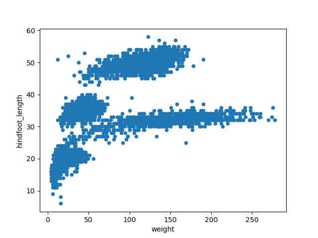
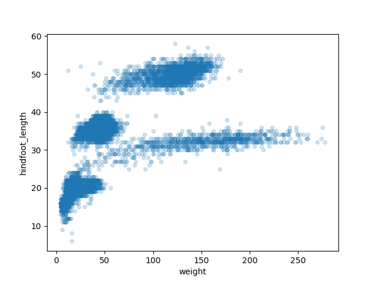
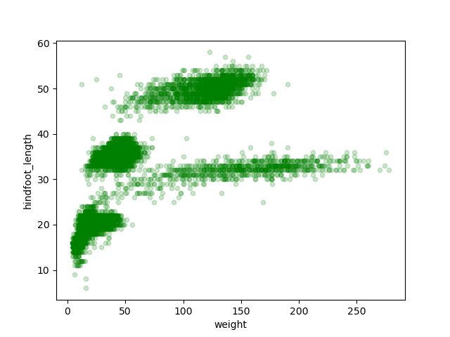
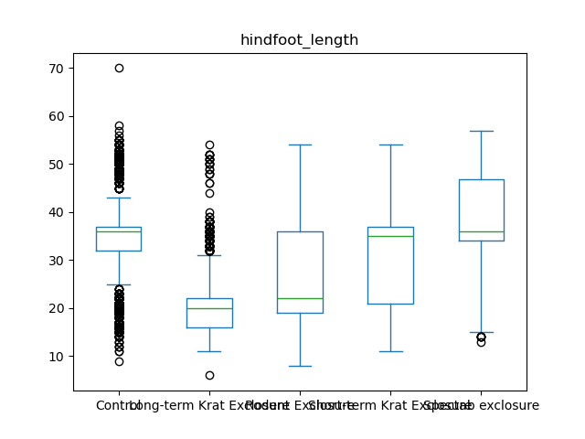
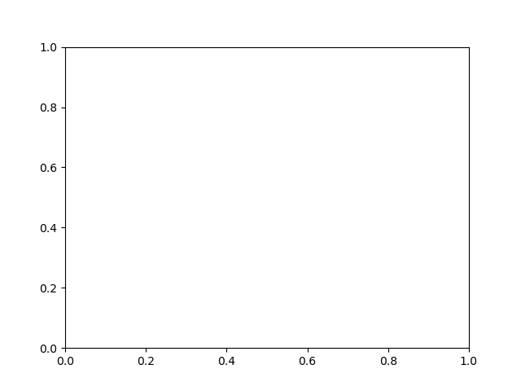
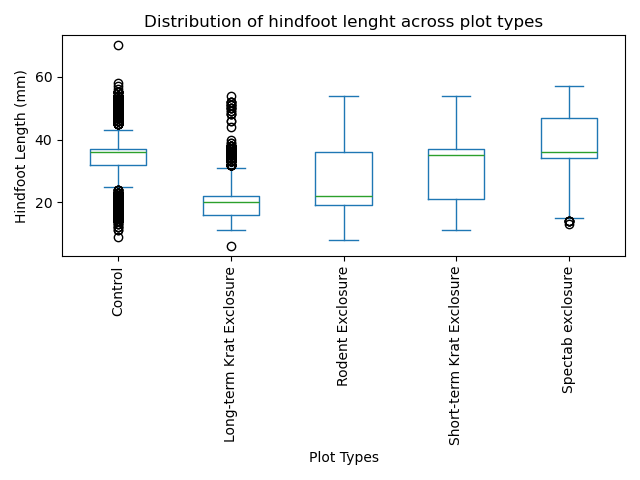
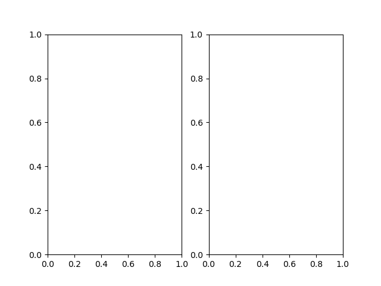
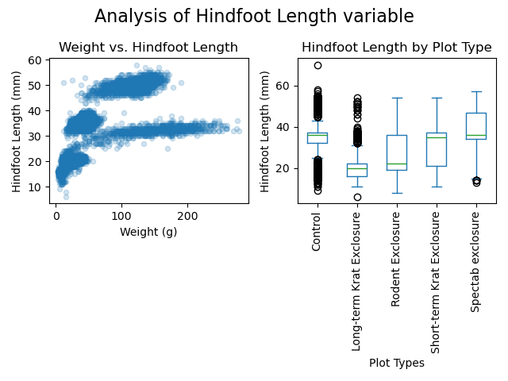

How do you start exploring and visualizing data using Python?
How can you make and customize plots?
Objectives
Explain the difference between installing a library and importing
it.
Load data from a CSV file into a pandas DataFrame and inspect its
contents and structure.
Generate plots, such as scatter plots and box plots, directly from a
pandas DataFrame.
Construct a Matplotlib figure containing multiple subplots.
Customize plot aesthetics like titles, axis labels, colors, and
layout by passing arguments to plotting functions.
Export a completed figure to a file.
Loading libraries
A great feature in Python is the ability to import
libraries to extend its capabilities. For now, we’ll
focus on two of the most widely used libraries for data analysis: pandas
and Matplotlib. We’ll be using pandas for data wrangling and
manipulation, and Matplotlib for (you guessed it) making plots.
To be able to use these libraries in our code, we have to
install and import them. Installation
is needed as pandas and Matplotlib are third-party libraries that aren’t
built into Python. You should have gone through the installation process
during the setup for the workshop (if not, visit the setup page), so we’ll jump straight to showing you
how to import libraries.
To import a library, we use the syntax
import libraryName. If we want to give the library a
nickname to shorten the command each time we call it, we can add
as nickNameHere. Here is how you’d import pandas and
Matplotlib using the common nicknames pd and
plt, respectively.
PYTHON
import pandas as pdimport matplotlib.pyplot as plt
If you got an error similar to
ModuleNotFoundError: No module named '___', it means you
haven’t installed the library. Check the setup
page to install it and double check you typed it correctly.
If you’re asking yourself why we used matplotlib.pyplot
instead of just matplotlib, good question! We are not
importing the entire Matplotlib library, we are only importing the
fraction of it we need for plotting, called pyplot. We will return to
this topic later to explain more about matplotlib.pyplot
and why that is the part that we need to import.
For the purposes of this workshop, you only need to install a library
once on your computer. However, you must import it in every notebook or
script where you plan to use it, since Python doesn’t automatically load
installed libraries.
In your future work with Python, this may not always be the case. You
might want to keep different projects separate by using a different
Python environment for each one. In that case, you’ll need to install
the same library in each environment. We’ll talk more about environments
later in the workshop.
We are studying the weight, hindfoot length, and sex of animals
caught in sites of our study area. The data is stored as a
.csv file: each row holds information for a single animal,
and the columns represent:
Column
Description
record_id
Unique id for the observation
month
month of observation
day
day of observation
year
year of observation
plot_id
ID of a particular site
species_id
2-letter code
sex
sex of animal (“M”, “F”)
hindfoot_length
length of the hindfoot in mm
weight
weight of the animal in grams
genus
the genus of the species
species
the latin species name
taxa
general taxonomic category
plot_type
type of experimental manipulation conducted
We’ll load the data in the csv into Python and name this new object
samples. For this, we can use the pandas
library and its .read_csv() function, like shown here:
Here we have created a new object that we can reference later in our
code. All objects in Python have a type, which determine
what is possible to do with them. To know the type of an object, we can
use the type() function.
PYTHON
type(samples)
OUTPUT
pandas.core.frame.DataFrame
Notice how we didn’t use the = operator in this case.
This means we didn’t create a new object, we just asked Python to show
us the output of the function. When we created samples with
the = operator it didn’t print an output, but it stored the
object in Python which we can later use.
From the output we can read that samples is an object of
pandas DataFrame type. We’ll explore in depth what a DataFrame is in the
next episode. For now, we only need to keep in mind that our data is now
contained in a DataFrame. And this is important as the methods we’ll
cover now -.head(), .info(), and
.plot()- are only available to DataFrame objects.
Now that our data is in Python, we can start working with it. A good
place to start is taking a look at the data. With the
.head() method, we can see the first five rows of the data
set.
PYTHON
samples.head()
OUTPUT
record_id month day year plot_id species_id sex hindfoot_length \
0 1 7 16 1977 2 NL M 32.0
1 2 7 16 1977 3 NL M 33.0
2 3 7 16 1977 2 DM F 37.0
3 4 7 16 1977 7 DM M 36.0
4 5 7 16 1977 3 DM M 35.0
weight genus species taxa plot_type
0 NaN Neotoma albigula Rodent Control
1 NaN Neotoma albigula Rodent Long-term Krat Exclosure
2 NaN Dipodomys merriami Rodent Control
3 NaN Dipodomys merriami Rodent Rodent Exclosure
4 NaN Dipodomys merriami Rodent Long-term Krat Exclosure
The .tail() method will give us instead the last five
rows of the data. If we want to override this default and instead
display the last two rows, we can use the n argument. An
argument is an input that a function or method takes to
modify how it operates, and you set arguments using the =
sign.
PYTHON
samples.tail(n=2)
OUTPUT
record_id month day year plot_id species_id sex hindfoot_length \
16876 16877 12 5 1989 11 DM M 37.0
16877 16878 12 5 1989 8 DM F 37.0
weight genus species taxa plot_type
16876 50.0 Dipodomys merriami Rodent Control
16877 42.0 Dipodomys merriami Rodent Control
Another useful method to get a glimpse of the data is
.info(). This tells us how many rows the data set has (# of
entries), the number of columns, and for each of the columns it says its
name, the number of non-null (or non-empty) rows it contains, and its
data type.
As we saw, functions allow us to perform a given task. They take
inputs, perform the task on those inputs, and return an output. For
example, with the pd.read_csv() function, we gave the file
path as input, and it returned the DataFrame as output.
Functions can be built-in, which means they come natively with
Python, like type() or print(). Or they can
come from an imported library, like pd.read_csv() comes
from Pandas.
A method is similar to a function. The only difference is a method is
associated with a given object type. That’s why we use the syntax
object_name.method_name().
This is the case for .head(), .tail(), and
.info(): they are methods that the pandas
DataFrame object carries around with it.
Basic plotting with Pandas
pandas makes it easy to start plotting your data with the
.plot() method. By passing arguments to this method, we can
tell Pandas how we want the plot to look.
With the following code, we will make a scatter plot (argument
kind = 'scatter') to analyze the relationship between the
weight (which will plot in the x axis, argument
x = 'weight') and the hindfoot length (in the y axis,
argument y = 'hindfoot_length') of the animals sampled at
the study site.
PYTHON
samples.plot(x ='weight', y ='hindfoot_length', kind ='scatter')

When coding, you’ll often find the case where you can get to the same
result using different code. In this case, the creators of pandas make
it possible to make the previous plot with the.plot.scatter
method, without having to specify the “kind” argument.
PYTHON
samples.plot.scatter(x ='weight', y ='hindfoot_length')
This scatter plot shows there seems to be a positive relation between
weight and hindfoot length, where heavier animals tend to have bigger
hindfeet. But you may have noticed that parts of our scatter plot have
many overlapping points, making it difficult to see all the data. We can
adjust the transparency of the points using the alpha
argument, which takes a value between 0 and 1.
PYTHON
samples.plot(x ='weight', y ='hindfoot_length', kind ='scatter', alpha =0.2)

With transparency added to the points, we can more clearly observe a
clustering of data points into several more densely populated regions of
the scatter plot.
There are multiple ways we can learn what other arguments we have
available to modify the looks of our plot. One of those ways is reading
the documentation of the library we are using. In the next episode,
we’ll cover other ways to get help in Python.
Challenge
Challenge - Changing the color of points
Check the documentation of the pandas method
.plot.scatter() to learn what argument you can use to
change the color of the points in the scatter plot to green.
Continuing from our last line of code where we added the “alpha”
argument, we can add the argument c = 'green' to achieve
what we want.
PYTHON
samples.plot(x ='weight', y ='hindfoot_length', kind='scatter', alpha =0.2, c ='green')

Similarly, we could make a box plot to explore
the distribution of the hindfoot length across all samples. In this
case, pandas wants us to use different arguments. We’ll use the
column argument to specify what is the column we want to
analyze.
The box plot shows the median hindfoot length is around 32mm
(represented by the line inside the box) and most values lie between 20
and 35 mm (which are the borders of the box, representing the 1st and
3rd quartile of the data, respectively).
We could further expand this analysis, and see the distribution of
this variable across different plot types. We can add a by
argument, saying by which variable we want do disaggregate the box
plot.
PYTHON
samples.plot(column ='hindfoot_length', by ='plot_type', kind ='box')

As shown in the previous image, the x-axis labels overlap with each
other, which makes them unreadable. Furthermore, we’d like to start
customizing the title and the axis labels. Or maybe make multiple
subplots in the same figure. At this point we realize a more
fine-grained control over our graph is needed, and here is where
Matplotlib appears in the picture.
Advanced plots with Matplotlib
Matplotlib is a Python library
that is widely used throughout the scientific Python community to create
high-quality and publication-ready graphics. It supports a wide range of
raster and vector graphics formats including PNG, PostScript, EPS, PDF
and SVG.
Moreover, Matplotlib is the actual engine behind the plotting
capabilities of Pandas, and other plotting libraries like seaborn and plotnine. For example, when we call the
.plot() methods on pandas data objects, Matplotlib is
actually being used “backstage”.
Our first step in the process is creating our figure and our axes (or
plots), using the plt.subplots() function.
PYTHON
fig, axis = plt.subplots()

The fig object we are creating is the entire plot area,
which can contain one or multiple axes. In this case, the function
default is to create only one set of axes, which will be referenced as
the axis object. For now, this results in an empty plot
like a blank canvas for us to start plotting data on to.
We’ll add the previous box plot we made to this axis, by
using the ax argument inside the .plot()
function. This gives us a plot just as we had it before, but now onto an
axis object that we can start customizing.
Axis objects have a lot of methods like .tick_params(),
which can be used to adjust the layout and styling of the plot. For
example, we can modify the title (the column name is the default) and
add the x- and y-axis labels with the .set_title(),
.set_xlabel(), and .set_ylabel() methods. By
now, you may have begun copying and pasting the parts of the code that
don’t change to save yourself some typing time. Some lines might only
include subtle changes, so take care not to miss anything small and
important when reusing lines written previously.
PYTHON
fig, axis = plt.subplots()samples.plot(column ='hindfoot_length', by ='plot_type', kind ='box', ax = axis)axis.tick_params(axis='x', rotation =90)axis.set_title('Distribution of hindfoot lenght across plot types')axis.set_xlabel('Plot Types')axis.set_ylabel('Hindfoot Length (mm)')

Making multiple subplots
If we want more than one plot in the same figure, we could specify
the number of rows (nrows argument) and the number of
columns (ncols) when calling the plt.subplots
function. For example, let’s say we want two plots (or axes), organized
in two columns and one row. This will be useful in a minute, when we
arrange our scatter plot and box plot in a single figure.
PYTHON
fig, axes = plt.subplots(nrows =1, ncols =2) # note the variable name is 'axes' here rather than 'axis' used above

The axes object contains two objects, which correspond
to the two sets of axes. We can access each of the objects inside
axes using axes[0] and
axes[1].
We’ll get more comfortable with this Python syntax during the
workshop, but the most important thing to know now is that Python
indexes elements starting with 0. This means the first element in a
sequence has index 0, the second element has index 1, the third element
is 2, and so forth.
Here is the code to have two subplots, one with the scatter plot (on
axes[0]), and one with the box plot (on
axes[1]):
As shown before, Matplotlib allows us to customize every aspect of
our figure. So we’ll make it more professional by adding titles and axis
labels. Notice at the end the introduction of the
.suptitle() method, which allows us to add a super title to
the entire figure. We also use the .tight_layout() method,
to automatically adjust the padding between and around subplots. (Feel
free to try the code below with and without the
fig.tight_layout() line to better understand the difference
it makes.)
PYTHON
fig, axes = plt.subplots(nrows =1, ncols =2)samples.plot(x ='weight', y ='hindfoot_length', kind='scatter', alpha =0.2, ax = axes[0])axes[0].set_title('Weight vs. Hindfoot Length')axes[0].set_xlabel('Weight (g)')axes[0].set_ylabel('Hindfoot Length (mm)')samples.plot(column ='hindfoot_length', by ='plot_type', kind ='box', ax = axes[1])axes[1].tick_params(axis ='x', rotation =90)axes[1].set_title('Hindfoot Length by Plot Type')axes[1].set_xlabel('Plot Types')axes[1].set_ylabel('Hindfoot Length (mm)')fig.suptitle('Analysis of Hindfoot Length variable', fontsize=16)fig.tight_layout()

You now have the basic tools to create and customize plots using
pandas and Matplotlib! Let’s put it into practice.
Challenge
Challenge - Changing figure size
Our plot probably needs more vertical space, so let’s change the
figure size. Take a look at Matplotlib’s
figure documentation and answer:
What is the argument we need to make this adjustment?
What is the default figure size if we don’t change the
argument?
In which units is the size specified (inches, pixels,
centimeters)?
Use the argument in the plt.subplots() function to make
the previous figure 7x7 inches in size.
The argument we’re looking for is figsize. Figure
dimension is specified as (width, height) in inches, and the default
figure size is 6.4 inches wide and 4.8 inches tall. We can add the
figsize = (7,7) argument like this:
Let’s explore the data for the hindfoot length variable more deeply.
Add a third axis to the plot we’ve been working on, for a histogram of
the hindfoot length. For this you can add the argument
kind = hist to an additional .plot() method
call.
After that, there’s a few things you can do to make this graph look
nicer. Try making each of these one at a time to see how it changes.
Increase the size of the figure to make it 10in wide and 7in long,
just like in the previous challenge.
Make the histogram orientation horizontal and hide the legend. For
this, add the orientation='horizontal' and
legend = False arguments to your .plot()
method.
As the y-axis of each subplot is the same, we could use a shared
y-axis for all three. Explore the Matplotlib documentation some more to
find out which parameter you can use to achieve this.
Add a nice title to your third subplot.
Here is the final code to achieve all of the previous goals. Notice
what has changed from our previous code.
Until now our plots only live inside Python. Therefore, once we’re
satisfied with the resulting plot, we need to save it with the
.savefig() method on our figure object. The only required
argument is the file path in your computer where you want to save it.
Matplotlib recognizes the extension used in the filename and supports
(on most computers) png, pdf, ps, eps and svg formats.
PYTHON
fig.savefig('images/hindfoot_analysis.png')
Discussion
Challenge - Make and save your own plot
Put all this knowledge to practice and come up with your own plot of
the Portal Teaching data set. Use a different combination of variables,
or a different kind of plot. Here is the pandas
pd.plot() function documentation, where you can see
what other values you can use in the kind argument.
Save your plot to the “images” folder with a .pdf extension.
Other plotting libraries
Learning to plot with pandas and Matplotlib can be overwhelming by
itself. However, we want to invite you to explore other plotting
libraries available in Python, as some types of plots will be easier to
make with them. This will also take time and practice, as every new
library come with its own functions, methods, and arguments. But with
time and practice, you’ll get used to researching and learning about
these new libraries and how they work.
This is where the true power of open source software lies. There is
the big community of contributors who all the time are creating new
libraries or improving the existing ones.
Some of the libraries you might find useful are:
Plotnine:
Inspired by R’s ggplot2, it implements the “grammar of graphics”
approach. If you come from Rworld and the tidyverse, you’ll definitely
want to check it out.
On a plotnine figure, a Matplotlib figure is returned when you use
the .draw() method, so you can always start with plotnine
and then customize using Matplotlib.
Seaborn:
Focusing on statistical graphics, there’s a variety of plot types that
will be simpler to make (require fewer lines of code) in seaborn. To
name a few: statistical representations of averages or of simple linear
regression models; plots of categorical data; multivariate plots, etc.
Refer to the introduction
to seaborn to learn more.
For example, the following scatter plot which adds “sex” as a third
variable would require more lines of code if done with pandas +
Matplotlib alone.
Plotly:
A tool to explore if you want web-based interactive visualizations where
you can hover over data points to get additional information or zoom in
to get a closer look. Plots can be displayed in Jupyter notebooks,
standalone HTML files, or be part of a web dashboard.
PYTHON
import plotly.express as pxfig = px.scatter(data_frame=samples, x="weight", y="hindfoot_length", hover_data="record_id")
Key Points
Load your required libraries into Python and use common
nicknames
Use pandas to load your data –pd.read_csv()– and to
explore it –.head(), .tail(), and
.info() methods.
The .plot() method on your DataFrame is a good plotting
starting point.
Matplotlib allows you to customize every aspect of your plot. Start
with the plt.subplots() function to create a figure object
and the number of axes (or subplots) you need.
Export plots to a file using the .savefig()
method.